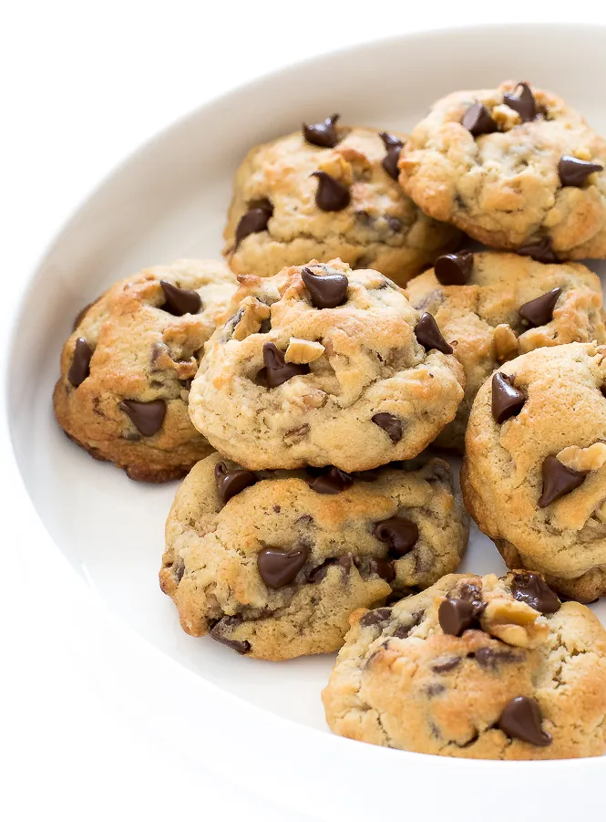

Homemade Chocolate Chip and Walnut Cookies

Delicious Homemade Chocolate Chip and Walnut Cookies
If you are looking for the best cookies you've ever tasted,
you're in luck. Kata's Chocolate Chip and Walnut Cookie recipe
is the best cookie recipe you will ever come across, web or otherwise.
Ingredients
- 1 cup cold and cubed unsalted butter
- 3/4 cup granulated sugar
- 3.4 cup brown sugar
- 2 eggs
- 3 1/4 cup of flour
- 3/4 teaspoon kosher salt
- 3/4 teaspoon baking powder
- 1/4 teaspoon baking soda
- 2 cups chocolate chips (1 milk chocalte and
1 semi-sweet chocolate)
- 1 cup walnuuts
Instructions
- Cream butter and sugar until fluffy, add egss one
at a time.
- Sift dry ingredients together, mix with wet, then add nuts
and chocolate.
- Bake at 350 degrees for 16-23 minutes. (more or less time depending
on crispy preference.)